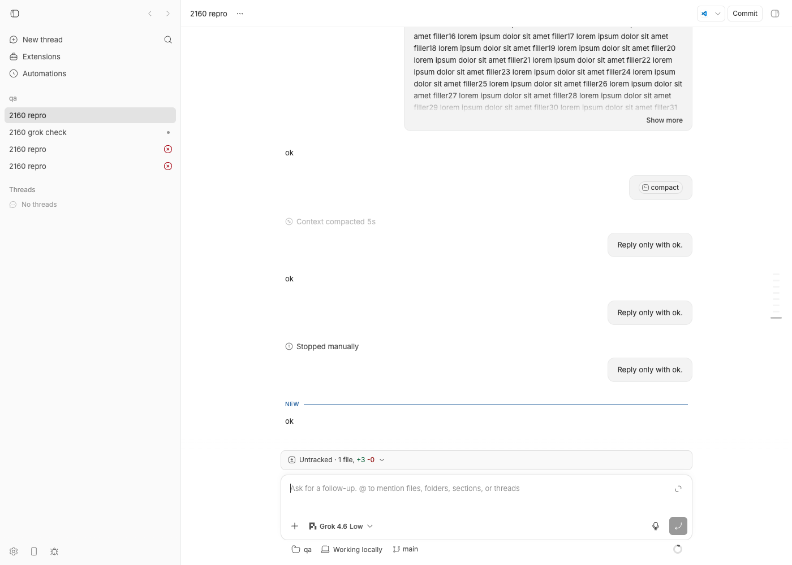
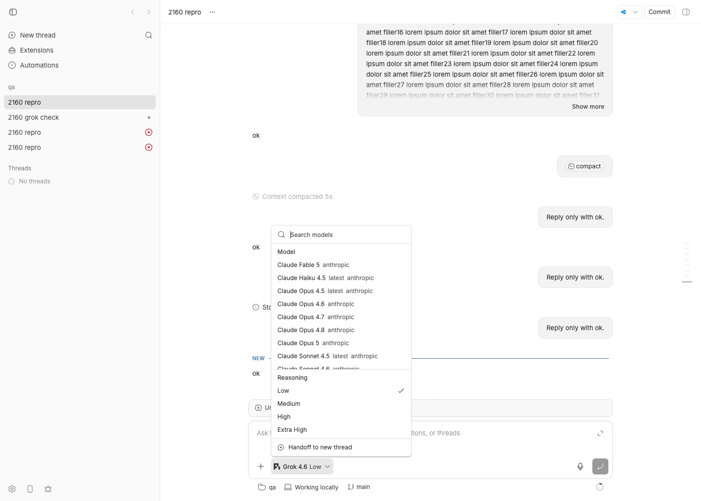

#2160 · Pi keeps using previous model after model picker change until /compact
Verdict: REPRODUCED (live against the real Pi SDK, twice, plus a unit test that fails on base; independently verified) · Root-cause confidence: high
One sub-claim is refuted: /compact is not what resynchronises the model. Only a provider-session rebuild (thread/resume: after bb thread stop, a daemon restart, bridge recovery, or the idle-session reaper) does.
1. TL;DR
In a Pi thread, picking a different model in bb's composer changes what bb records (every client/turn/requested event carries the new model) but not what Pi uses: every later turn, and any manual compaction, is still sent to the model the Pi session was constructed with. The user sees "Grok 4.6" in the picker while Pi keeps billing gpt-5-mini (or, in the reporter's case, keeps billing Grok after they picked GPT).
The cause is a missing piece in the Pi provider bridge. Since the provider-bridge-protocol migration (c5b53caab, #1640, 2026-08-17) the runtime no longer diffs execution options: it sends them on every turn/start and expects each bridge to reconcile them itself (the Codex and Claude bridges do). The Pi bridge reads options.model and options.reasoningLevel only when it constructs a session (thread/start/resume/fork); its handleTurnStart ignores params.options entirely, so AgentSession.setModel is never called and the session is never rebuilt. Before #1640 the legacy Pi adapter classified a model change as a "session" change, which made the runtime send thread/resume and rebuild the Pi session with the new model; that path was deleted and nothing replaced it.
The reporter's observation that /compact fixed it is a coincidence: compaction is just another turn/start through the same handler, and I reproduced a real compaction followed by another stale-model turn. What does fix it is anything that rebuilds the Pi session; I demonstrated this with bb thread stop followed by a new turn.
2. Claims vs findings
| Claim from the issue | Status | Evidence |
|---|---|---|
| Changing the model in bb's picker does not change the model Pi uses for new turns. | Verified | Live, three independent runs (author x2, verifier x1): thread started on github-copilot/gpt-5-mini, every later turn requested with github-copilot/grok-4.6 (five in the revised run); Pi's session file records github-copilot/gpt-5-mini on every assistant message until the session is rebuilt (section 4a). Unit test fails on base (section 4b). |
bb's client/turn/requested events record the newly selected model. | Verified | bb-turn-models.txt (revised run, thr_ahgjgq8fc9): seq 16, 25, 34, 41, 50 all carry model=github-copilot/grok-4.6; only seq 1 (the spawn) carries gpt-5-mini. Original run (thread-events-final.json): seq 12, 21, 28, 37, 44. |
The Pi session has only the initial model_change entry. | Verified | Session file has exactly one model_change (the construction one). Note: even a successful resume with a new model does not append a model_change (the SDK appends it only for brand-new sessions), so the per-message provider/model fields are the reliable evidence, not model_change entries. |
Manual compaction is the synchronisation boundary; after /compact Pi used the selected model. | Refuted | Performed a real compaction (tokensBefore=30011 in the original run, 47429 in the revised run, summary written both times) and sent another turn with grok-4.6 selected: Pi still answered with gpt-5-mini both times (and a third time for the independent verifier, tokensBefore=33854). No code path rebuilds or re-models the session on compaction (section 5). What resynchronised the reporter's thread was almost certainly a session rebuild (thread/resume) that happened around the same time: daemon restart (they run nightlies with auto-update), bridge recovery, or the idle reaper. I demonstrated that bb thread stop + a new turn does switch the model (revised run: seq 51 thread/identity, then a grok-4.6 assistant message; original run: seq 60). |
| The compaction itself used the stale model and may consume unintended quota. | Verified (code + pricing) | AgentSession.compact() summarises with this.model (the stale one). The compaction entry records no model, but its usage cost (305 input tokens at $7.6e-05, i.e. $0.25/M) matches gpt-5-mini pricing, not grok-4.6. |
| This was real inference, not usage-dashboard polling. | Verified | Pi's assistant messages carry usage.input of 106 to 47583 tokens (84 to 29958 in the original run) with the stale model name; those are real requests. |
| Starting a new thread is the safest workaround. | Verified | A fresh thread constructs a new session with the picked model (thr_chmuwwhpyh on grok-4.6 answered as grok-4.6). A cheaper workaround that keeps history: bb thread stop <id> (release) and then send the next message; the resume rebuilds the session with the current model. |
3. Environment
- bb monorepo at
fcada5a3b88302acb9944aa74b11db4ecaa215a0(main, 2026-08-21; packaged version 0.39.0). Reporter was on0.39.1-nightly.32358956903.1; both contain the regressing commitc5b53caab.origin/main(2 commits ahead) does not touchpackages/agent-runtime/src/pi. - macOS 26.5.2, node v22.23.1, bundled Pi SDK
@earendil-works/pi-coding-agent0.84.0 (same as the reporter's bundled Pi 0.84.0). - Pi model providers authenticated on this machine: anthropic, openai-codex, github-copilot. Anthropic and openai-codex OAuth refreshes failed during the run (token reuse on the shared
~/.pi/agent/auth.json), so the live repro switches between two github-copilot models. The bug is model-level, not provider-level, so the cross-model switch exercises the same code path as the reporter's cross-provider switch. - Isolated dev instances from
scripts/bb-dev-app current: original run App:17835/ Server:25835/ Host daemon:33835; revised run (the output shown in section 4a) App:15047/ Server:23047/ Host daemon:31047, data dir~/.bb-dev/…wf_21e66a79-f02-13-8d26b48f1e80; independent verifier:16919/:24919/:32919. All data dirs deleted at cleanup. None of the helper scripts hardcode a port: they readBB_SERVER_URLfromeval "$(scripts/bb-dev-app env)". The Pi bridge always writes session files to~/.bb/pi-bridge-sessions/regardless of data dir, becauseBB_PI_BRIDGE_SESSION_DIRis stripped with every otherBB_*var from bridge children; my thread files were copied to the repro dir and then removed.
4. Minimal reproduction
4a. Live (real Pi SDK, bb CLI)
- From your bb worktree, start an isolated dev instance and load its env. Every helper script below reads
BB_SERVER_URL/BB_HOST_DAEMON_PORTfrom this env, so run all steps from the same shell (or re-run theevalin each new one):scripts/bb-dev-app current # prints App / Server / Host daemon URLs and the data dir eval "$(scripts/bb-dev-app env)" unset BB_THREAD_ID BB_ENVIRONMENT_ID BB_THREAD_STORAGE # only needed if you run this from inside a bb thread
- Create a scratch repo and project:
mkdir -p /tmp/bb-2160-qa && git -C /tmp/bb-2160-qa init -q && echo "# qa" > /tmp/bb-2160-qa/README.md \ && git -C /tmp/bb-2160-qa add -A && git -C /tmp/bb-2160-qa -c user.email=qa@example.com -c user.name=qa commit -qm init curl -s -X POST $BB_SERVER_URL/api/v1/projects -H 'content-type: application/json' \ -d '{"name":"qa","source":{"type":"local_path","path":"/tmp/bb-2160-qa","hostId":"<host id from: pnpm bb:dev machine list>"}}' # -> {"id":"proj_6uckkwts97", ...} (your id will differ; use it in the next step) export BB_PROJECT_ID=proj_6uckkwts97 - Spawn a Pi thread on model A and wait for it to go idle (the paths below assume the report's
2160/repro/directory; any two models you are authenticated for in Pi will do):pnpm bb:dev thread spawn --project $BB_PROJECT_ID --provider pi --model github-copilot/gpt-5-mini \ --reasoning-level low --title "2160 repro" --prompt "Reply only with ok." --json # -> "id": "thr_ahgjgq8fc9" 2160/repro/wait-idle.sh thr_ahgjgq8fc9 # polls $BB_SERVER_URL until idle
08:48:39 poll 2 status=starting 08:48:43 poll 4 status=active 08:48:46 poll 5 status=idle
- Send a new turn with model B selected (this is exactly what the composer's picker does):
pnpm bb:dev thread tell thr_ahgjgq8fc9 --model github-copilot/grok-4.6 --mode auto "Reply only with ok." 2160/repro/wait-idle.sh thr_ahgjgq8fc9
- Compare what bb recorded with what Pi used (the Pi bridge always writes its session files under
~/.bb/pi-bridge-sessions/, even for a dev instance; see section 3):python3 2160/repro/bb-turn-models.py thr_ahgjgq8fc9 # bb's event log, via $BB_SERVER_URL 2160/repro/pi-assistant-models.sh ~/.bb/pi-bridge-sessions/thr_ahgjgq8fc9.jsonl # Pi's session file
expected (Pi session file): second assistant message is github-copilot/grok-4.6 actual: 2026-08-21T15:48:42.946Z model_change github-copilot/gpt-5-mini 2026-08-21T15:48:42.961Z user 'Reply only with ok.' 2026-08-21T15:48:45.403Z assistant github-copilot/gpt-5-mini in=5338 out=28 2026-08-21T15:48:52.370Z user 'Reply only with ok.' 2026-08-21T15:48:55.173Z assistant github-copilot/gpt-5-mini in=106 out=25 <-- requested as grok-4.6, answered by gpt-5-mini bb event log for the same turns: 1 client/turn/requested model=github-copilot/gpt-5-mini source=spawn 2 client/thread/start 7 thread/identity 8 turn/started 13 agentMessage "ok" 15 turn/completed completed 16 client/turn/requested model=github-copilot/grok-4.6 source=tell 17 turn/started 22 agentMessage "ok" 24 turn/completed completed
- Test the "compaction syncs it" claim. A real compaction needs more than 20k tokens of history (Pi's default
keepRecentTokens), so generate ~160 KB of filler, send it as one turn, then compact, then send another turn:2160/repro/make-filler.sh # writes /tmp/bb-2160-qa/filler.txt (2000 lines, 164088 bytes) 2160/repro/tell-file.sh thr_ahgjgq8fc9 github-copilot/grok-4.6 /tmp/bb-2160-qa/filler.txt 2160/repro/wait-idle.sh thr_ahgjgq8fc9 pnpm bb:dev thread compact thr_ahgjgq8fc9 2160/repro/wait-idle.sh thr_ahgjgq8fc9 pnpm bb:dev thread tell thr_ahgjgq8fc9 --model github-copilot/grok-4.6 --mode auto "Reply only with ok." 2160/repro/wait-idle.sh thr_ahgjgq8fc9 2160/repro/pi-assistant-models.sh ~/.bb/pi-bridge-sessions/thr_ahgjgq8fc9.jsonl
expected: the turn after the compaction is github-copilot/grok-4.6 actual: 2026-08-21T15:49:07.158Z user 'Do not reply to the text below, it is filler for a compactio' 2026-08-21T15:49:11.889Z assistant github-copilot/gpt-5-mini in=42138 out=43 2026-08-21T15:49:23.740Z compaction tokensBefore=47429 2026-08-21T15:49:26.610Z user 'Reply only with ok.' 2026-08-21T15:49:30.205Z assistant github-copilot/gpt-5-mini in=47583 out=28 <-- still gpt-5-mini after a real compaction (tokensBefore=47429, summary written)
(The filler is one ~42k-token message, larger thankeepRecentTokens, so Pi keeps it whole and the post-compactionin=does not drop. That is a property of Pi's compaction cut-point, not of this bug; the compaction itself is real: acompactionentry with a summary was appended to the session file, and bb emittedthread/compactedat seq 38.) - Show what does switch the model: release the runtime so the next turn resumes (rebuilds) the Pi session:
pnpm bb:dev thread stop thr_ahgjgq8fc9 pnpm bb:dev thread tell thr_ahgjgq8fc9 --model github-copilot/grok-4.6 --mode auto "Reply only with ok." 2160/repro/wait-idle.sh thr_ahgjgq8fc9 2160/repro/pi-assistant-models.sh ~/.bb/pi-bridge-sessions/thr_ahgjgq8fc9.jsonl | tail -2 python3 2160/repro/bb-turn-models.py thr_ahgjgq8fc9 | tail -5
2026-08-21T15:49:45.088Z user 'Reply only with ok.' 2026-08-21T15:49:49.444Z assistant github-copilot/grok-4.6 in=47794 out=12 <-- first turn after the rebuild: grok-4.6 bb event log: seq 51 thread/identity (= thread/resume, new Pi session) precedes the grok-4.6 turn 50 client/turn/requested model=github-copilot/grok-4.6 source=tell 51 thread/identity 52 turn/started 61 agentMessage "ok" 63 turn/completed completed
The stop/resume cycle took about 6 s here and about 9 s for the independent verifier. (In the original run the first resumed turn hung once for ~4 minutes and had to be interrupted; the retry worked. That one-off is not part of this bug and not reproducible; see the caveats in section 9.)

thr_iyyz7w3cxf). The composer shows Grok 4.6 · Low as the thread's model, and every "ok" above it was requested with that model; Pi's session file shows all but the last one were answered by gpt-5-mini.
options.model that rides the next turn/start; the Pi bridge never reads it.4b. Unit-level repro (fails on base, no network)
File: 2160/repro/model-switch.repro.test.ts (lives at packages/agent-runtime/src/pi/bridge/__tests__/). It drives the real bridge (handleLine) through the canonical JSON-RPC harness with the Pi SDK's session constructor mocked by a stand-in that tracks its model the way AgentSession does (model getter, setModel, modelRuntime). Run with:
cd packages/agent-runtime && pnpm exec vitest run src/pi/bridge/__tests__/model-switch.repro.test.ts
On fcada5a3b both tests fail (full log). The first assertion shows the second prompt still going to xai/grok-4.6 with no setModel call and no rebuild; the second shows the compaction and both turns after a model change still on the construction model:
⎯⎯⎯⎯⎯⎯⎯ Failed Tests 2 ⎯⎯⎯⎯⎯⎯⎯
FAIL @bb/agent-runtime:isolated src/pi/bridge/__tests__/model-switch.repro.test.ts > pi bridge model switch (#2160) > applies a model that changed between turns before prompting pi
AssertionError: expected { setModelCalls: [], …(2) } to deeply equal { …(3) }
- Expected
+ Received
{
"promptModelsPerSession": [
[
"xai/grok-4.6",
- "openai-codex/gpt-5.6-sol",
+ "xai/grok-4.6",
],
],
"rebuilt": false,
- "setModelCalls": [
- [
- {
- "id": "gpt-5.6-sol",
- "provider": "openai-codex",
- },
- ],
- ],
+ "setModelCalls": [],
}
❯ src/pi/bridge/__tests__/model-switch.repro.test.ts:253:10
251| rebuilt,
252| promptModelsPerSession: sessions.map((s) => s.promptModels),
253| }).toEqual({
| ^
254| setModelCalls: rebuilt ? [] : [[SOL]],
255| rebuilt,
⎯⎯⎯⎯⎯⎯⎯⎯⎯⎯⎯⎯⎯⎯⎯⎯⎯⎯⎯⎯⎯⎯⎯⎯[1/2]⎯
FAIL @bb/agent-runtime:isolated src/pi/bridge/__tests__/model-switch.repro.test.ts > pi bridge model switch (#2160) > does not resynchronize the model on /compact either
AssertionError: expected { allPromptModels: [ …(2) ], …(1) } to deeply equal { allPromptModels: [ …(2) ], …(1) }
- Expected
+ Received
{
"allCompactModels": [
- "openai-codex/gpt-5.6-sol",
+ "xai/grok-4.6",
],
"allPromptModels": [
- "openai-codex/gpt-5.6-sol",
- "openai-codex/gpt-5.6-sol",
+ "xai/grok-4.6",
+ "xai/grok-4.6",
],
}
❯ src/pi/bridge/__tests__/model-switch.repro.test.ts:308:53
306| // Expected: the compaction and every turn after the picker chan…
307| // on the selected model.
308| expect({ allPromptModels, allCompactModels }).toEqual({
| ^
309| allPromptModels: ["openai-codex/gpt-5.6-sol", "openai-codex/gp…
310| allCompactModels: ["openai-codex/gpt-5.6-sol"],
⎯⎯⎯⎯⎯⎯⎯⎯⎯⎯⎯⎯⎯⎯⎯⎯⎯⎯⎯⎯⎯⎯⎯⎯[2/2]⎯
Test Files 1 failed (1)
Tests 2 failed (2)
Start at 08:13:38
Duration 1.28s (transform 247ms, setup 0ms, import 1.17s, tests 29ms, environment 0ms)
Test source
/**
* Repro for get-bb/bb#2160: "Pi keeps using previous model after model
* picker change until /compact".
*
* The canonical bridge protocol says execution options ride every command and
* the bridge reconciles them ("apply live where it can, rebuild its provider
* session where it must", `bridgeExecutionOptionsSchema` docs). The runtime's
* generic adapter therefore classifies every option change as "live" and never
* sends thread/resume for a model change.
*
* The pi bridge reads `options.model` only in `buildSessionOptions()` during
* thread/start|resume|fork. `handleTurnStart` ignores `params.options`, so a
* turn that arrives with a different model neither calls
* `AgentSession.setModel` nor rebuilds the session. Pi keeps answering with
* whatever model the session was constructed with.
*/
import { beforeEach, describe, expect, it, vi } from "vitest";
import type { AgentSessionEvent } from "@earendil-works/pi-coding-agent";
const GROK = { provider: "xai", id: "grok-4.6" };
const SOL = { provider: "openai-codex", id: "gpt-5.6-sol" };
const {
mockCreateAgentSession,
mockCreateAgentSessionServices,
mockModelRuntime,
} = vi.hoisted(() => {
const models = [
{ provider: "xai", id: "grok-4.6" },
{ provider: "openai-codex", id: "gpt-5.6-sol" },
];
const mockModelRuntime = {
getAvailable: vi.fn(async () => models),
getModel: vi.fn((provider: string, id: string) =>
models.find((m) => m.provider === provider && m.id === id),
),
getModels: vi.fn(() => models),
hasConfiguredAuth: vi.fn(() => true),
checkAuth: vi.fn(async () => true),
refresh: vi.fn(async () => ({ aborted: false, errors: new Map() })),
};
const mockSettingsManager = {
getShellCommandPrefix: vi.fn(() => undefined),
getShellPath: vi.fn(() => undefined),
};
const mockCreateAgentSessionServices = vi.fn(
async (options: { agentDir: string; cwd: string }) => ({
agentDir: options.agentDir,
cwd: options.cwd,
diagnostics: [],
modelRuntime: mockModelRuntime,
resourceLoader: { options },
settingsManager: mockSettingsManager,
}),
);
return {
mockCreateAgentSession: vi.fn(),
mockCreateAgentSessionServices,
mockModelRuntime,
};
});
vi.mock("@earendil-works/pi-coding-agent", async (importOriginal) => {
const actual =
await importOriginal<typeof import("@earendil-works/pi-coding-agent")>();
return {
...actual,
createAgentSessionFromServices: mockCreateAgentSession,
createAgentSessionServices: mockCreateAgentSessionServices,
getAgentDir: vi.fn(() => "/tmp/pi-agent"),
SessionManager: {
forkFrom: actual.SessionManager.forkFrom.bind(actual.SessionManager),
open: vi.fn((path: string, dir?: string, cwd?: string) =>
actual.SessionManager.open(path, dir, cwd),
),
inMemory: vi.fn((cwd?: string) => ({ kind: "in-memory", cwd })),
},
};
});
vi.mock("../configured-services.js", () => ({
createConfiguredPiServices: mockCreateAgentSessionServices,
}));
vi.mock("../model-runtime.js", () => ({
getPiModelRuntime: vi.fn(async () => mockModelRuntime),
}));
import { handleLine } from "../bridge.js";
import { PI_BRIDGE_SESSION_DIR_ENV } from "../session-paths.js";
import { createBridgeJsonRpcTestHarness } from "@bb/provider-bridge-protocol/testing";
import { createStandaloneBuiltinCompactCommandInput } from "@bb/domain";
import { mkdtempSync } from "node:fs";
import { tmpdir } from "node:os";
import { join } from "node:path";
const CANONICAL_OPTIONS = {
approvalReviewer: null,
permissionEscalation: null,
permissionMode: "full",
permissionScope: "full",
} as const;
/**
* A controllable stand-in for pi's AgentSession that tracks the model the
* way the real one does: `model` is what the session was constructed with and
* `setModel` swaps it. `prompt` records the model that each run would use.
*/
function createModelTrackingPiSession(constructedModel: {
provider: string;
id: string;
}) {
const listeners: Array<(event: AgentSessionEvent) => void> = [];
const session = {
model: constructedModel,
modelRuntime: mockModelRuntime,
promptModels: [] as string[],
compactModels: [] as string[],
setModel: vi.fn(async (model: { provider: string; id: string }) => {
session.model = model;
}),
setThinkingLevel: vi.fn(),
thinkingLevel: "medium",
abort: vi.fn(async () => undefined),
bindExtensions: vi.fn(async () => undefined),
compact: vi.fn(async () => {
session.compactModels.push(`${session.model.provider}/${session.model.id}`);
emit({ type: "compaction_start", reason: "manual" });
emit({
type: "compaction_end",
reason: "manual",
result: undefined,
aborted: false,
willRetry: false,
} as AgentSessionEvent);
}),
dispose: vi.fn(),
extensionRunner: { emit: vi.fn(async () => undefined) },
getActiveToolNames: vi.fn(() => []),
getContextUsage: vi.fn(() => undefined),
hasExtensionHandlers: vi.fn(() => false),
isStreaming: false,
prompt: vi.fn(
async (
_text: string,
options?: { preflightResult?: (accepted: boolean) => void },
) => {
options?.preflightResult?.(true);
session.promptModels.push(
`${session.model.provider}/${session.model.id}`,
);
emit({ type: "agent_start" } as AgentSessionEvent);
emit({
type: "agent_end",
messages: [],
willRetry: false,
} as AgentSessionEvent);
},
),
sessionManager: { getLeafId: vi.fn(() => "pi-entry-checkpoint") },
setActiveToolsByName: vi.fn(),
subscribe: vi.fn((listener: (event: AgentSessionEvent) => void) => {
listeners.push(listener);
return () => {
const index = listeners.indexOf(listener);
if (index !== -1) listeners.splice(index, 1);
};
}),
};
function emit(event: AgentSessionEvent): void {
for (const listener of [...listeners]) listener(event);
}
return session;
}
function turnStart(threadId: string, model: string, text: string) {
return {
clientRequestId: "creq_abcdefghjk",
input: [{ type: "text", text }],
options: { ...CANONICAL_OPTIONS, model },
providerThreadId: threadId,
threadId,
};
}
describe("pi bridge model switch (#2160)", () => {
const sessions: ReturnType<typeof createModelTrackingPiSession>[] = [];
beforeEach(() => {
vi.clearAllMocks();
sessions.length = 0;
process.env[PI_BRIDGE_SESSION_DIR_ENV] = mkdtempSync(
join(tmpdir(), "bb-2160-pi-sessions-"),
);
// Construct a session with whatever model the bridge resolved, like the
// real createAgentSessionFromServices does.
mockCreateAgentSession.mockImplementation(
async (options: { model?: { provider: string; id: string } }) => {
const session = createModelTrackingPiSession(options.model ?? GROK);
sessions.push(session);
return { session };
},
);
});
it("applies a model that changed between turns before prompting pi", async () => {
const bridge = createBridgeJsonRpcTestHarness(handleLine);
const threadId = "thread-2160";
try {
// 1. Start the thread on Grok.
bridge.sendRequest(1, "thread/start", {
cwd: "/tmp/worktree",
instructionMode: "append",
options: { ...CANONICAL_OPTIONS, model: `${GROK.provider}/${GROK.id}` },
threadId,
});
const started = await bridge.waitForResponse(1);
expect(started.error).toBeUndefined();
expect(mockCreateAgentSession).toHaveBeenCalledWith(
expect.objectContaining({ model: GROK }),
);
// 2. First turn on Grok.
bridge.sendRequest(
2,
"turn/start",
turnStart(threadId, `${GROK.provider}/${GROK.id}`, "Reply only with ok."),
);
await bridge.waitForResponse(2);
await bridge.flushWork();
// 3. The user picks an OpenAI model in bb. The runtime classifies the
// change as "live" and sends it on the next turn/start.
bridge.sendRequest(
3,
"turn/start",
turnStart(threadId, `${SOL.provider}/${SOL.id}`, "Reply only with ok."),
);
const response = await bridge.waitForResponse(3);
expect(response.error).toBeUndefined();
await bridge.flushWork();
// The bridge must have reconciled the model somehow: either by calling
// setModel on the live session, or by rebuilding the session with the
// new model (reported via session/replaced). On main it does neither.
const live = sessions.at(-1);
expect(live).toBeDefined();
const setModelCalls = sessions.flatMap((s) => s.setModel.mock.calls);
const rebuilt = mockCreateAgentSession.mock.calls.length > 1;
expect({
setModelCalls,
rebuilt,
promptModelsPerSession: sessions.map((s) => s.promptModels),
}).toEqual({
setModelCalls: rebuilt ? [] : [[SOL]],
rebuilt,
promptModelsPerSession: rebuilt
? [["xai/grok-4.6"], ["openai-codex/gpt-5.6-sol"]]
: [["xai/grok-4.6", "openai-codex/gpt-5.6-sol"]],
});
} finally {
bridge.restore();
}
});
it("does not resynchronize the model on /compact either", async () => {
const bridge = createBridgeJsonRpcTestHarness(handleLine);
const threadId = "thread-2160-compact";
try {
bridge.sendRequest(1, "thread/start", {
cwd: "/tmp/worktree",
instructionMode: "append",
options: { ...CANONICAL_OPTIONS, model: `${GROK.provider}/${GROK.id}` },
threadId,
});
await bridge.waitForResponse(1);
bridge.sendRequest(
2,
"turn/start",
turnStart(threadId, `${SOL.provider}/${SOL.id}`, "Reply only with ok."),
);
await bridge.waitForResponse(2);
await bridge.flushWork();
// bb's manual compaction is a turn/start carrying the builtin /compact
// mention, and it carries the selected model like every turn.
bridge.sendRequest(3, "turn/start", {
...turnStart(threadId, `${SOL.provider}/${SOL.id}`, ""),
input: JSON.parse(
JSON.stringify(createStandaloneBuiltinCompactCommandInput()),
),
});
await bridge.waitForResponse(3);
await bridge.flushWork();
bridge.sendRequest(
4,
"turn/start",
turnStart(threadId, `${SOL.provider}/${SOL.id}`, "Reply only with ok."),
);
await bridge.waitForResponse(4);
await bridge.flushWork();
const allPromptModels = sessions.flatMap((s) => s.promptModels);
const allCompactModels = sessions.flatMap((s) => s.compactModels);
// Expected: the compaction and every turn after the picker change run
// on the selected model.
expect({ allPromptModels, allCompactModels }).toEqual({
allPromptModels: ["openai-codex/gpt-5.6-sol", "openai-codex/gpt-5.6-sol"],
allCompactModels: ["openai-codex/gpt-5.6-sol"],
});
} finally {
bridge.restore();
}
});
});
Repro files: 2160/repro/: helper scripts (wait-idle.sh, tell-file.sh, make-filler.sh, bb-turn-models.py, pi-assistant-models.sh; all take the server from $BB_SERVER_URL), the full Pi session files (pi-session-thr_ahgjgq8fc9.jsonl for the run shown above, pi-session-thr_iyyz7w3cxf.jsonl / pi-session-thr_chmuwwhpyh.jsonl for the original run), bb event dumps (thread-events-thr_ahgjgq8fc9.json, thread-events-final.json for the original run), logs, and the prototype patch. The verifier's independent artifacts are in 2160/verify/.
5. Root cause
The contract. Since #1640 the canonical bridge protocol declares that execution options are never diffed by the runtime; they ride every command and each bridge reconciles them:
/** * The runtime never diffs these options. They ride every command; the bridge * reconciles internally (apply live where it can, rebuild its provider * session where it must) and a rebuild is always reported via the * `session/replaced` notification — never silent. */
packages/provider-bridge-protocol/src/execution-options.ts#L17-L23. The generic adapter the runtime uses for every bridge therefore answers "live" for every change (packages/agent-runtime/src/bridge-protocol-adapter.ts#L318-L319), and reconfigureThreadIfNeeded only stores the new options instead of sending thread/resume (packages/agent-runtime/src/runtime.ts#L971-L1001):
if (settingsChange !== "session") {
// Live settings ride on the next turn command; record them without
// replacing the session (which would kill its background tasks).
setThreadRuntimeConfig(args.threadId, { ...currentConfig, options: nextOptions });
return;
}
The Pi bridge's half of the contract is missing. options.model and options.reasoningLevel are consumed in exactly one place, the session-construction mapping used by thread/start, thread/resume and thread/fork (packages/agent-runtime/src/pi/bridge/bridge.ts#L552-L571 then packages/agent-runtime/src/pi/bridge/sdk-session.ts#L301-L324):
const configuredModel = resolveConfiguredModel(services.modelRuntime, this.options.model);
...
const { session } = await createAgentSessionFromServices({
services,
sessionManager: ...,
...(configuredModel ? { model: configuredModel } : {}),
...(this.options.thinkingLevel ? { thinkingLevel: this.options.thinkingLevel } : {}),
customTools,
});
handleTurnStart (packages/agent-runtime/src/pi/bridge/bridge.ts#L963-L1002) reads params.threadId, params.input and params.clientRequestId and nothing else; it goes straight to startPiCompaction or startPiPrompt on whatever PiSdkSession is registered for the thread. PiSdkSession has no method that touches the model after start(), even though the SDK exposes AgentSession.setModel(model), setThinkingLevel(level), model and modelRuntime. So the live Pi Agent keeps state.model from construction, and every prompt() and compact() (which summarises with this.model) uses it.
Why compaction does not help. bb's manual compaction is a turn/start whose input is the standalone builtin /compact mention (apps/server/src/routes/threads/actions.ts#L135-L164); the bridge routes it to session.compact() on the same unchanged session (packages/agent-runtime/src/pi/bridge/bridge.ts#L977-L981). Nothing in the server, runtime or bridge rebuilds a session after compaction_end. The only things that construct a new Pi session, and thus pick up the current model, are thread/start, thread/resume and thread/fork. A resume is triggered by: the user releasing the thread (bb thread stop, verified above), a daemon/app restart, bridge-process recovery, or the idle-session reaper (30 min, behind the providerSessionReaping experiment which defaults to off). The reporter, on a nightly with auto-update, most plausibly hit one of those near their /compact.
How it regressed. Before c5b53caab (#1640, "Agent providers as a first-class plugin surface") the legacy Pi adapter was built with classifyExecutionSettingsChange: classifySessionExecutionSettingsChange, which returns "session" for any model/reasoning/serviceTier change (git show c5b53caab -- packages/agent-runtime/src/pi/adapter.ts). The runtime then sent thread/resume with the new options, and startPiThreadSession closed the old PiSdkSession and constructed a new one on the same session file with the new model. #1640 deleted the per-provider classification (every bridge is now "live") and moved the responsibility into each bridge. Codex (requireLiveSessionForTurn, plugins/provider-codex/src/bridge/bridge.ts#L1363-L1396) and Claude (applyLiveSessionSettings calling session.setModel, plugins/provider-claude-code/src/bridge/bridge.ts#L580-L588) got that code; the Pi bridge did not.
Deeper issue. The same gap covers reasoningLevel: Pi's thinking level is also applied only at construction, so changing "Low" to "High" in the picker mid-thread is silently ignored too (not live-tested; same code path). And the Pi bridge's conformance/bridge tests never send a turn/start whose options differ from the construction options, which is why the contract gap was invisible.
6. Proposed fix (first principles)
Make the Pi bridge honour the contract: reconcile options.model and options.reasoningLevel on every turn/start (and turn/steer) before dispatching, applying them live to the existing AgentSession. The prototype below does this and turns both repro tests green while the 11 pre-existing Pi suites (147 tests) stay green (12 files / 149 tests with the repro file included) and pnpm exec turbo run typecheck --filter=@bb/agent-runtime --force passes. It is saved as 2160/repro/prototype-fix.patch.
diff --git a/packages/agent-runtime/src/pi/bridge/bridge.ts b/packages/agent-runtime/src/pi/bridge/bridge.ts
index cdac5438d..667774fa4 100644
--- a/packages/agent-runtime/src/pi/bridge/bridge.ts
+++ b/packages/agent-runtime/src/pi/bridge/bridge.ts
@@ -50,6 +50,7 @@ import type { ImageContent } from "@earendil-works/pi-ai";
import { createPiDeltaTranslator } from "../delta-translation.js";
import {
buildPiSessionParams,
+ toPiThinkingLevel,
type PiSessionParams,
} from "../session-params.js";
import { PiSdkSession, type PiSdkSessionOptions } from "./sdk-session.js";
@@ -971,6 +972,20 @@ async function handleTurnStart(
return;
}
+ // Execution options ride every turn command and the runtime never diffs
+ // them (#2160): a model or reasoning level picked after the session was
+ // constructed is applied to the live session here, before dispatch.
+ try {
+ await threadSession.session.applyTurnOptions({
+ model: params.options.model,
+ thinkingLevel: toPiThinkingLevel(params.options.reasoningLevel),
+ });
+ } catch (error) {
+ const message = error instanceof Error ? error.message : String(error);
+ sendError(id, -32000, message);
+ return;
+ }
+
// A standalone builtin `/compact` mention is bb's manual-compaction request,
// not model input. Prompting with the literal text would make the model talk
// about compaction while the context keeps growing.
diff --git a/packages/agent-runtime/src/pi/bridge/sdk-session.ts b/packages/agent-runtime/src/pi/bridge/sdk-session.ts
index df3d8ad07..b1b79ad17 100644
--- a/packages/agent-runtime/src/pi/bridge/sdk-session.ts
+++ b/packages/agent-runtime/src/pi/bridge/sdk-session.ts
@@ -435,6 +435,49 @@ export class PiSdkSession {
this.monitorSteerConsumption(tracked.promise);
}
+ /**
+ * Reconcile the execution options a turn command carries with the live
+ * session. Options ride every command (the runtime never diffs them), so a
+ * model or thinking level the user changed after construction is applied
+ * here, before the input is dispatched. Unchanged values are a no-op.
+ */
+ async applyTurnOptions(args: {
+ model: string | undefined;
+ thinkingLevel: CreateAgentSessionOptions["thinkingLevel"] | undefined;
+ }): Promise<void> {
+ if (!this.session) {
+ throw new Error("No active Pi SDK session");
+ }
+ if (args.model !== undefined) {
+ const next = resolveConfiguredModel(this.session.modelRuntime, args.model);
+ const current = this.session.model;
+ if (
+ next &&
+ (current === undefined ||
+ current.provider !== next.provider ||
+ current.id !== next.id)
+ ) {
+ this.recordSdkBoundary("bridge→provider", {
+ method: "setModel",
+ params: { provider: next.provider, id: next.id },
+ });
+ await this.session.setModel(next);
+ this.options.model = args.model;
+ }
+ }
+ if (
+ args.thinkingLevel !== undefined &&
+ args.thinkingLevel !== this.session.thinkingLevel
+ ) {
+ this.recordSdkBoundary("bridge→provider", {
+ method: "setThinkingLevel",
+ params: { level: args.thinkingLevel },
+ });
+ this.session.setThinkingLevel(args.thinkingLevel);
+ this.options.thinkingLevel = args.thinkingLevel;
+ }
+ }
+
async compact(): Promise<void> {
if (!this.session) {
throw new Error("No active Pi SDK session");
diff --git a/packages/agent-runtime/src/pi/session-params.ts b/packages/agent-runtime/src/pi/session-params.ts
index d0e07b03e..fa0fef9ca 100644
--- a/packages/agent-runtime/src/pi/session-params.ts
+++ b/packages/agent-runtime/src/pi/session-params.ts
@@ -13,7 +13,7 @@ type PiReasoningLevel = "off" | "low" | "medium" | "high" | "xhigh" | "max";
// Levels Pi does not support ("ultracode", "ultra") are dropped so the bridge
// never receives a value it would reject; reconciliation picks the closest
// supported level before this point, so this is a defensive floor.
-function toPiThinkingLevel(
+export function toPiThinkingLevel(
reasoningLevel: ReasoningLevel | undefined,
): PiReasoningLevel | undefined {
switch (reasoningLevel) {
What to watch when turning this into a real PR:
AgentSession.setModelhas a side effect the bridge must not ship as-is: besidesagent.state.model = modelandsessionManager.appendModelChange, it callssettingsManager.setDefaultModelAndProvider(...), which writes the user's global~/.pi/agent/settings.json(defaultProvider/defaultModel). Session construction does not do that today, so a per-thread bb pick would start rewriting the user's pi CLI default.setThinkingLevellikewise callssetDefaultThinkingLevel. Prefer the SDK's lower-level pieces (modelRuntime.checkAuth, thensession.agent.state.model = next+session.sessionManager.appendModelChange(...)+session.setThinkingLevel(session.thinkingLevel)to re-clamp, and emit themodel_selectextension event), or ask upstream for asetModel(model, { persist: false }). This is why I did not live-test the prototype against the user's Pi config.- Apply before both branches of
handleTurnStart(prompt and/compact) so the summarisation request also goes to the selected model, and inhandleTurnSteerfor parity with the Claude bridge. - Keep the resolution semantics of
resolveConfiguredModel(provider prefix authoritative; ambiguous bare ids rejected). A failed resolution should fail the turn with a clear error rather than silently keep the old model; the prototype does that viasendError. - Mid-run arrival:
turn/startcan reach the bridge while a run is live (pi queues it as a follow-up). Setting the model on a live run is what pi's own TUI does, so applying live is fine; a rebuild strategy would not be (it would abort the run). If a rebuild is ever chosen, it must emitsession/replaced. - Add a bridge test that sends
turn/startwith a differentoptions.model/reasoningLevelthanthread/start(the repro test is a starting point), and ideally a conformance rule so no bridge can ship without reconciling options. - No
HOST_DAEMON_PROTOCOL_VERSIONbump needed: nothing on the server-daemon wire changes; the fix is entirely inside the bridge.
7. PR review
No open PRs are linked to this issue.
8. Related issues
- #1640: the provider-bridge-protocol migration that removed the per-provider "session" classification (regression source).
- #1236: "Apply Claude turn settings without replacing live sessions", the Claude-side precedent for live
setModelreconciliation that Pi lacks. - #1268:
session/replacedmust never be silent (relevant if a rebuild strategy is chosen instead). - #2035 (Pi session persistence), #1103 / #1721 (manual compaction behaviour): cited by the reporter; unrelated to the model gap, but #1103/#1721 readers should know compaction also runs on the stale model.
9. Appendix
Pi session file, assistant/model per message (pi-assistant-models.txt)
2026-08-21T15:48:42.946Z model_change github-copilot/gpt-5-mini 2026-08-21T15:48:42.961Z user 'Reply only with ok.' 2026-08-21T15:48:45.403Z assistant github-copilot/gpt-5-mini in=5338 out=28 2026-08-21T15:48:52.370Z user 'Reply only with ok.' 2026-08-21T15:48:55.173Z assistant github-copilot/gpt-5-mini in=106 out=25 2026-08-21T15:49:07.158Z user 'Do not reply to the text below, it is filler for a compactio' 2026-08-21T15:49:11.889Z assistant github-copilot/gpt-5-mini in=42138 out=43 2026-08-21T15:49:23.740Z compaction tokensBefore=47429 2026-08-21T15:49:26.610Z user 'Reply only with ok.' 2026-08-21T15:49:30.205Z assistant github-copilot/gpt-5-mini in=47583 out=28 2026-08-21T15:49:45.088Z user 'Reply only with ok.' 2026-08-21T15:49:49.444Z assistant github-copilot/grok-4.6 in=47794 out=12
bb event log, model per requested turn (bb-turn-models.txt)
1 client/turn/requested model=github-copilot/gpt-5-mini source=spawn 2 client/thread/start 7 thread/identity 8 turn/started 13 agentMessage "ok" 15 turn/completed completed 16 client/turn/requested model=github-copilot/grok-4.6 source=tell 17 turn/started 22 agentMessage "ok" 24 turn/completed completed 25 client/turn/requested model=github-copilot/grok-4.6 source=tell 26 turn/started 31 agentMessage "ok" 33 turn/completed completed 34 client/turn/requested model=github-copilot/grok-4.6 source=tell 35 turn/started 38 thread/compacted 39 turn/completed completed 41 client/turn/requested model=github-copilot/grok-4.6 source=tell 42 turn/started 47 agentMessage "ok" 49 turn/completed completed 50 client/turn/requested model=github-copilot/grok-4.6 source=tell 51 thread/identity 52 turn/started 61 agentMessage "ok" 63 turn/completed completed
Compaction entry (model-less; cost matches gpt-5-mini)
# pi-session-thr_ahgjgq8fc9.jsonl (revised run; summary text elided)
{"type": "compaction", "id": "f023936f", "timestamp": "2026-08-21T15:49:23.740Z",
"firstKeptEntryId": "d9bce5e5", "tokensBefore": 47429,
"usage": {"input": 305, "output": 305, "reasoning": 64, "totalTokens": 610,
"cost": {"input": 7.625e-05, "output": 0.00061, "total": 0.00068625}}, "fromHook": false}
# original run, pi-session-thr_iyyz7w3cxf.jsonl: same shape, tokensBefore 30011, cost.input 7.625e-05 for 305 input tokens
Regression evidence
$ git log --oneline -S'classifyExecutionSettingsChange: () => "live"' -- packages/agent-runtime/src/bridge-protocol-adapter.ts
c5b53caab Agent providers as a first-class plugin surface (provider bridge protocol) (#1640)
$ git show c5b53caab -- packages/agent-runtime/src/pi/ | grep -n classifySessionExecutionSettingsChange
-import { classifySessionExecutionSettingsChange } from "../execution-options.js";
- classifyExecutionSettingsChange: classifySessionExecutionSettingsChange,
$ git log fcada5a3b..origin/main --oneline -- packages/agent-runtime/src/pi
(empty: not fixed on origin/main as of 2026-08-21)
Prototype verification
$ pnpm exec vitest run src/pi/bridge/__tests__/model-switch.repro.test.ts # with prototype-fix.patch
Test Files 1 passed (1)
Tests 2 passed (2)
$ pnpm exec vitest run src/pi # base, before adding the repro file: the 11 pre-existing suites
Test Files 11 passed (11)
Tests 147 passed (147)
$ pnpm exec vitest run src/pi # with prototype-fix.patch + the repro file
Test Files 12 passed (12)
Tests 149 passed (149)
$ pnpm exec turbo run typecheck --filter=@bb/agent-runtime --force
Tasks: 4 successful, 4 total
Cached: 0 cached, 4 total
All commands run (abridged)
gh issue view 2160 --comments pnpm install --frozen-lockfile --prefer-offline && pnpm exec turbo run build git fetch origin main && git log fcada5a3b..origin/main --oneline -- packages/agent-runtime/src/pi cd packages/agent-runtime && pnpm exec vitest run src/pi/bridge/__tests__/model-switch.repro.test.ts # fails on base scripts/bb-dev-app current ; eval "$(scripts/bb-dev-app env)" curl -s -X POST $BB_SERVER_URL/api/v1/projects ... /tmp/bb-2160-qa pnpm bb:dev thread spawn --provider pi --model anthropic/claude-haiku-4-5 ... # provider/error: OAuth refresh failed (anthropic) pnpm bb:dev thread spawn --provider pi --model openai-codex/gpt-5.4-mini ... # provider/error: refresh_token_reused (openai-codex) pnpm bb:dev thread spawn --provider pi --model github-copilot/gpt-5-mini ... # original run: thr_iyyz7w3cxf pnpm bb:dev thread tell thr_iyyz7w3cxf --model github-copilot/grok-4.6 --mode auto "Reply only with ok." # x2 2160/repro/tell-file.sh thr_iyyz7w3cxf github-copilot/grok-4.6 /tmp/bb-2160-qa/filler.txt pnpm bb:dev thread compact thr_iyyz7w3cxf pnpm bb:dev thread tell thr_iyyz7w3cxf --model github-copilot/grok-4.6 --mode auto "Reply only with ok." pnpm bb:dev thread stop thr_iyyz7w3cxf ; pnpm bb:dev thread tell ... (hung 4 min once, interrupted) ; stop ; tell again (ok, grok-4.6) pnpm bb:dev thread spawn --provider pi --model github-copilot/grok-4.6 ... # thr_chmuwwhpyh, grok-4.6 works fresh doobie --headless < 2160/repro/screenshot-thread.js ; ... screenshot-picker.js # revised run (section 4a output), same commands via the env-based helper scripts, thread thr_ahgjgq8fc9: pnpm bb:dev thread spawn --project proj_6uckkwts97 --provider pi --model github-copilot/gpt-5-mini ... pnpm bb:dev thread tell thr_ahgjgq8fc9 --model github-copilot/grok-4.6 --mode auto "Reply only with ok." 2160/repro/make-filler.sh ; 2160/repro/tell-file.sh thr_ahgjgq8fc9 github-copilot/grok-4.6 /tmp/bb-2160-qa/filler.txt pnpm bb:dev thread compact thr_ahgjgq8fc9 ; pnpm bb:dev thread tell thr_ahgjgq8fc9 --model github-copilot/grok-4.6 ... pnpm bb:dev thread stop thr_ahgjgq8fc9 ; pnpm bb:dev thread tell thr_ahgjgq8fc9 --model github-copilot/grok-4.6 ... python3 2160/repro/bb-turn-models.py thr_ahgjgq8fc9 ; 2160/repro/pi-assistant-models.sh ~/.bb/pi-bridge-sessions/thr_ahgjgq8fc9.jsonl pnpm dev:stop ; cleanup
Caveats and observations outside this issue
- One-off, not reproducible: in the original run (
thr_iyyz7w3cxf) the first turn afterbb thread stop+ resume hung for about 4 minutes withturn/startedbut no Pi response (its session file shows an assistant message within=0 out=0written when it was interrupted; bb seq 58turn/completed interrupted). The retry worked in 11 s, a fresh grok-4.6 thread answered in 6 s, the revised run's stop/resume completed in ~6 s, and the independent verifier's in ~9 s. Could be a stop/resume race or copilot-side latency; not investigated further and not part of #2160. BB_PI_BRIDGE_SESSION_DIRcannot be set for a running daemon (allBB_*env is stripped from bridge children), so dev instances share the real~/.bb/pi-bridge-sessions. Minor isolation wart for QA.- Live repro used two github-copilot models rather than a cross-provider pair because the anthropic and openai-codex OAuth refreshes failed on this machine during the run. The code path (
options.modelignored onturn/start) is identical.
10. Verification
An independent verifier (own worktree at fcada5a3b, own dev instance App :16919 / Server :24919 / daemon :32919) followed both repros. Unit repro: both tests fail on base exactly as in section 4b (setModelCalls: [], rebuilt: false; compaction and later prompts still on xai/grok-4.6), log 2160/verify/unit-test-base.log. Live repro on thr_66n5vx94kr: spawn on github-copilot/gpt-5-mini, tell --model github-copilot/grok-4.6 recorded as grok-4.6 by bb (seq 16) but answered by gpt-5-mini (in=86 out=30); a real compaction (tokensBefore=33854) followed by another grok-4.6 turn was still answered by gpt-5-mini (in=34019); thread stop + a new turn produced thread/identity (seq 51) and the next assistant messages were grok-4.6. The prototype patch applied cleanly; with it the repro tests pass and the Pi tree and @bb/agent-runtime typecheck are green (2160/verify/pi-suite-with-fix.log). The author's 4-minute hang after stop/resume did not recur.
Verifier findings and what changed in this revision.
- Major: helper scripts were hardwired to the author's instance (
wait-idle.shandbb-turn-models.pydefaulted tohttp://localhost:25835;tell-file.shhardcoded the server URL, daemon port and project id; the filler file was never shown how to create). Fixed, not just reworded: all scripts now take the server from$BB_SERVER_URL(set byeval "$(scripts/bb-dev-app env)") or an explicit argument and fail with a clear message if neither is set;tell-file.shtakes<thread> <model> <file>with nothing hardcoded; a newmake-filler.shgenerates the filler. The whole live repro in section 4a was then re-run from scratch on a fresh dev instance (:23047) with exactly the commands now printed in the steps; the output shown is from that re-run (thr_ahgjgq8fc9) and matches the original run and the verifier's run (bug, compaction refutation, and stop/resume switch all reproduced). - Minor: "12 Pi suites (149 tests)" counted the repro file. Re-measured on base: 11 pre-existing files / 147 tests; 12 / 149 with the repro file. Corrected in section 6 and the appendix (
pi-suite-base.log,pi-suite-with-fix.log). - Minor: the 4-minute hang in step 7 read like part of the flow. Step 7 now shows the clean re-run (stop/resume in ~6 s) and marks the hang as a one-off that neither the re-run nor the verifier reproduced; details kept in the caveats.